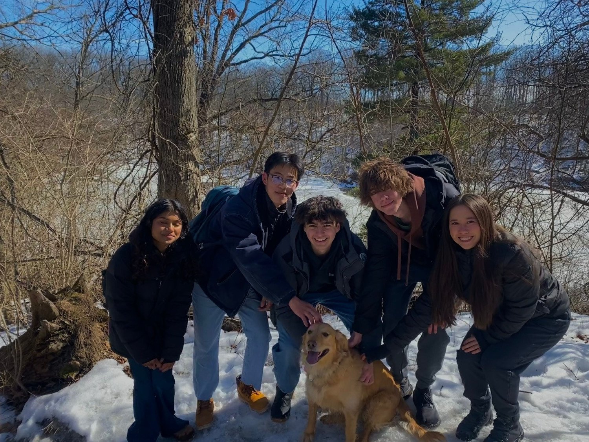
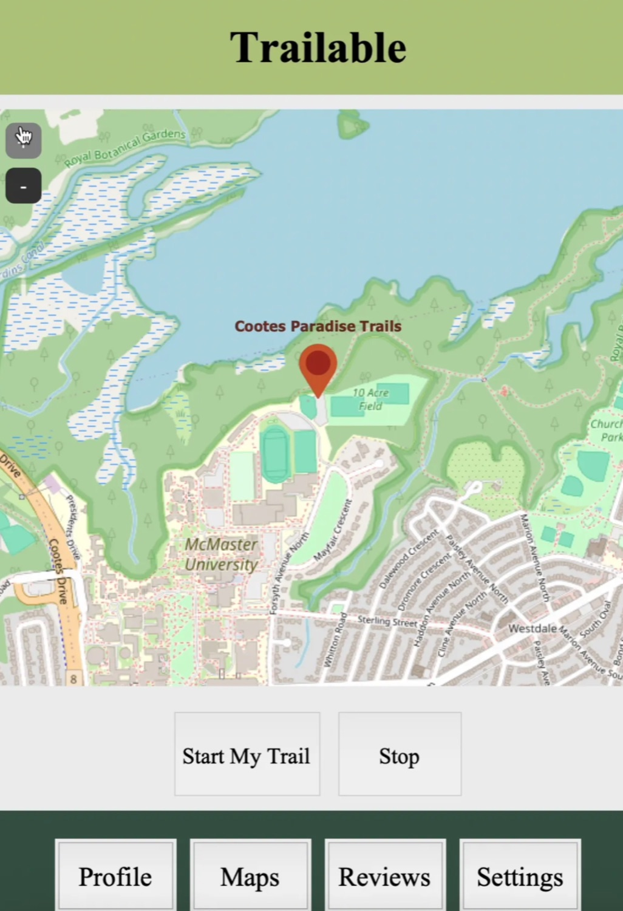
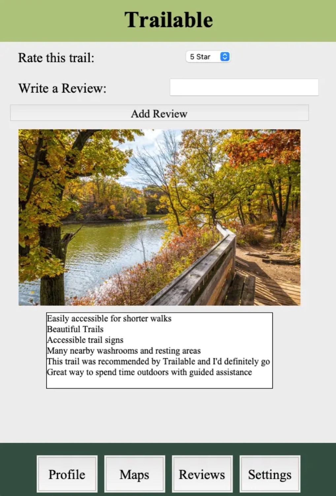
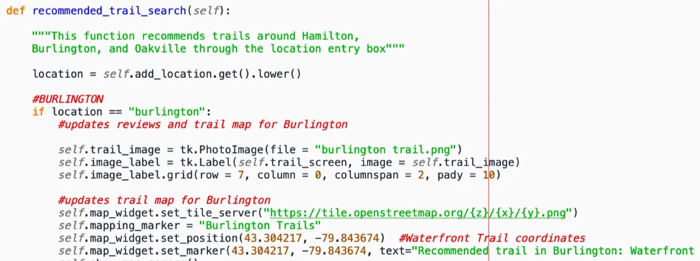

Trailable: designing an accessible trail app for the differently-abled
A cornerstone design project that started with a hike and ended with a Python app that reads trails aloud, recolours itself for three kinds of colour blindness, and maps the way home.
The problem
The differently-abled community runs into difficulties every day that most people never have to think about — and a lot of them get quietly overlooked. For the third and final cornerstone design project of ENG 1P13, my team was asked to improve the daily life of a specific client by taking her accessibility challenges seriously, especially around being outdoors.
The goal we set: program an outdoor application for differently-abled people that lets them get outside in a meaningful, safe way — improving mobility at little cost to the user, and giving audio cues to navigate hiking trails comfortably.
“Never doubt that a small group of thoughtful, committed citizens can change the world; indeed, it's the only thing that ever has.” — Margaret Mead
The client
The most thought-provoking part of this project was understanding who we were building for — her history, her environment, and the specific challenges she navigates daily.
▶ Background information about the client context
Our client presents with type 3 Usher syndrome, a dual-sensory condition that impairs both hearing and vision, with effects that intensify as the person ages [1]. Her vision loss is driven by retinitis pigmentosa, a group of eye diseases that break down the cells of the retina — affecting peripheral and colour detection, and leading to tunnel vision and colour blindness [2]. Day to day, she already uses her phone to magnify and identify objects through various assistive apps.
After my team and I went on a long hike on the Cootes Paradise Trail, we noticed how hard it was to navigate without any guidance or accessible technology — which sparked real concern for how differently-abled hikers experience the same trail. That hike is what pushed us toward a trail-navigation app.

Our solution
The final design was a Python application called Trailable — built to assist the differently-abled community on trails with audio-guided assistance. It targets the client's accessibility needs and puts user experience first, which is exactly what our decision matrix was built to weigh.

The decision matrix
Before writing a line of code, we scored five candidate concepts against four criteria — ease of use, instruction clarity, customizability, and community-feedback orientation — each weighted by how much it mattered for accessibility. The chart below shows the total weighted score for each concept; the full weighted breakdown is in the dropdown underneath.
The two strongest concepts — a customizable hiking profile and audio-first assistance — are what Trailable ended up combining: a customizable, audio-guided trail companion.
▶ Full weighted decision matrix data
| Criteria | Weight (1–4) | Hiking Profile Maker | Trail Audio UI | Partial program | Hiking cane | Customizable Hiking Assist. |
|---|---|---|---|---|---|---|
| Ease of use | 4 | 28 | 32 | 3 | 20 | 20 |
| Instruction clarity | 1 | 8 | 6 | 0 | 10 | 5 |
| Customizability | 2 | 12 | 6 | 16 | 2 | 12 |
| Community feedback orientation | 3 | 12 | 9 | 9 | 0 | 15 |
| Total | — | 60 | 53 | 32 | 32 | 52 |
Figure 3 (original): Trailable decision matrix. Scores are weighted (raw score × criterion weight).
How we built it
We programmed the app in Python. I built the UI with Tkinter for its easy compatibility with Python libraries and the freedom it gives over the GUI [3]. During the hike we recorded the directions of the Cootes Paradise trails to bake into the app, then I coded it in an object-oriented style and rendered the trail map with the OpenStreetMap API [4].


▶ How the recommended-trail search works code
A location entry box lets the user type a city — Hamilton, Burlington, or Oakville — and the app updates the trail map, marker and reviews to a recommended trail near them, driving the OpenStreetMap tile server to the right coordinates.
def recommended_trail_search(self):
"""Recommends trails around Hamilton, Burlington,
and Oakville through the location entry box"""
location = self.add_location.get().lower()
# BURLINGTON
if location == "burlington":
# updates reviews and trail map for Burlington
self.trail_image = tk.PhotoImage(file="burlington trail.png")
self.image_label = tk.Label(self.trail_screen, image=self.trail_image)
self.image_label.grid(row=7, column=0, columnspan=2, pady=10)
self.map_widget.set_tile_server(
"https://tile.openstreetmap.org/{z}/{x}/{y}.png")
self.map_widget.set_position(43.304217, -79.843674) # Waterfront Trail
self.map_widget.set_marker(43.304217, -79.843674,
text="Recommended trail in Burlington: Waterfront")
My contributions
Across the build I owned the app's accessibility features in Python and the overall UI, and I led the group discussions that shaped the design. Roughly how my time broke down:
Challenges & solutions
▶ The challenges I ran into problems
- Making the reviews page easier to navigate
- Finding colour-way options for different types of colour blindness [5]
- Implementing the mapping API and formatting the GUI
- Building a search function to recommend trails by the user's location
- Adding biomimicry features to the trail app
▶ How I solved them solutions
- Text-to-speech instructions with the
pyttsx3library - Three colour-mode settings built with Tkinter — one for each type of colour blindness: protanopia, deuteranopia and tritanopia [5]
- The interactive map via the OpenStreetMap API [4]
-
Recorded bird calls and natural soundscapes from the trails, mixed
into the audio directory with the
Pymixerlibrary [3] - A function that updates the map coordinates and reviews screen based on the user's location preferences
▶ Personal logbook — meeting notes timeline
| Date & time | Action items |
|---|---|
| Fri Mar 7, 2025 12:00–15:30 |
Hiked to gather information · recorded observational data on environmental factors · gathered feedback for trail mapping |
| Mon Mar 10, 2025 17:30–19:30 |
Finalized code for the mapping API · created the search-bar location function · gathered feedback from testing |
| Wed Mar 19, 2025 20:15–22:00 |
Final adjustments to the settings & reviews screen code · structured and completed the team presentation on time |
| Fri Mar 21, 2025 14:30–15:30 |
Final edits to the presentation · assigned slides & practiced delivery · wrote the “Final Proposed Design” section of the report |
The demo
While designing Trailable we kept four objectives in mind — app customizability, user experience, low bug frequency, and instruction clarity — each chosen with accessibility at the centre. Here it is running:
Reflection & feedback
▶ Final reflection learning
This project taught me how much research and testing matter at every stage of building an app and making critical decisions. It matters because it forces me to collect the right data about the scenario and the client so I can actually accommodate their needs, and to feed testing results back into a stronger design. Going forward I'll carry that into future projects: thorough research, continuous prototyping, and improving after every test.
▶ Summary takeaway
This decision-making experience — challenges included — was an important step for my engineering aspirations, because it taught me to adapt to shifting ideas based on the client's needs. It pushed me out of my comfort zone and into researching how to translate testing and design ideas into code. I'll keep seeking peer feedback and testing as much as possible so my work meets the highest standard.
▶ What my teammates said peer feedback
“You were irreplaceable for this project, and your extensive knowledge and learning during this project allowed the final design to be pretty cool. You voiced what needed to be said and listened to everyone else. The responsiveness on Teams was much appreciated, and working upon everyone else's code was appreciated.”
“Great job with your work completing the UI for the app. It was well made and put together in a timely manner. You also stepped up and made up for others missing work when required.”
— Project 3 teammates
References
- “What Is Usher Syndrome? Symptoms & Treatment,” NIDCD. Accessed Mar. 30, 2025.
- “Retinitis Pigmentosa,” National Eye Institute. Accessed Mar. 30, 2025.
- “Welcome to Python.org,” Python. Accessed Mar. 30, 2025.
- S. Coast, OpenStreetMap. Accessed Mar. 30, 2025.
- D. Nichols, “Coloring for Colorblindness.” Accessed Mar. 30, 2025.
Design Project 3 · ENG 1P13 Integrated Cornerstone Design, McMaster University · Winter 2025.